Olga
Shafieva
Eine persönliche Markenpräsentation zwischen Immobilien und Kunst. Zwei Kompetenzbereiche, verbunden in einer visuellen Geschichte.
Präsentationsdesign — Anna Dmitrieva
2026
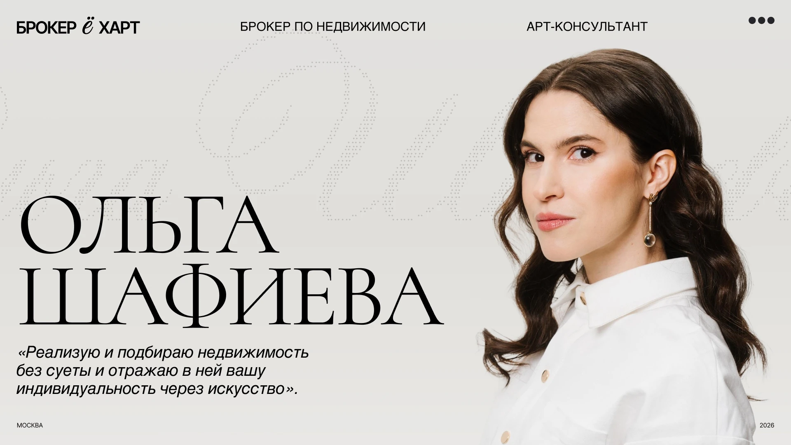
Jede Folie lässt sich in voller Größe öffnen.
Zwei Disziplinen.
Eine visuelle Sprache.
Immobilien und Kunstberatung werden durch die Persönlichkeit der Expertin verbunden. Porträts, ausdrucksstarke Typografie und Architekturfotografie schaffen einen stimmigen Auftritt.
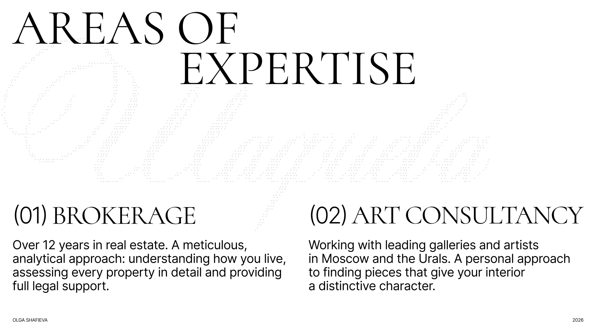
Immobilien.
Persönlich betrachtet.
Porträts und Informationsfolien wechseln sich ab und geben der Präsentation ihren Rhythmus. Die persönliche Geschichte führt in die Expertise und Arbeitsweise ein.
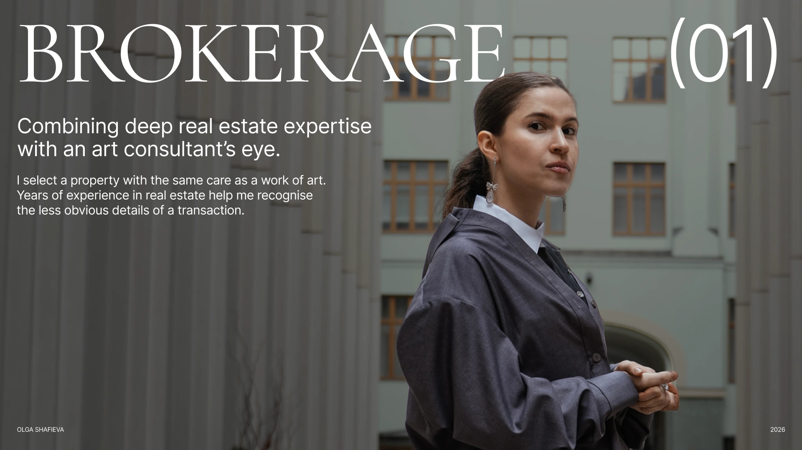
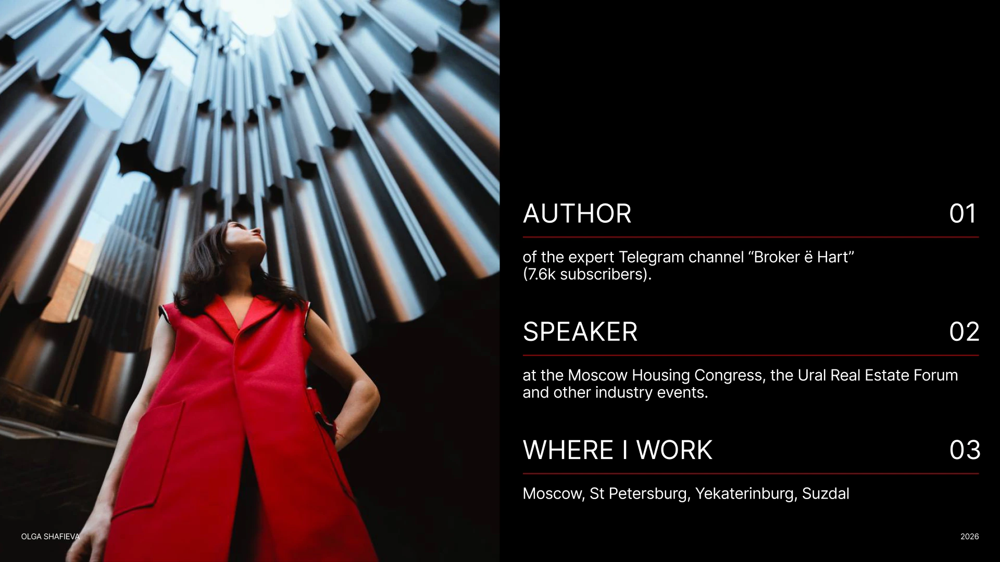
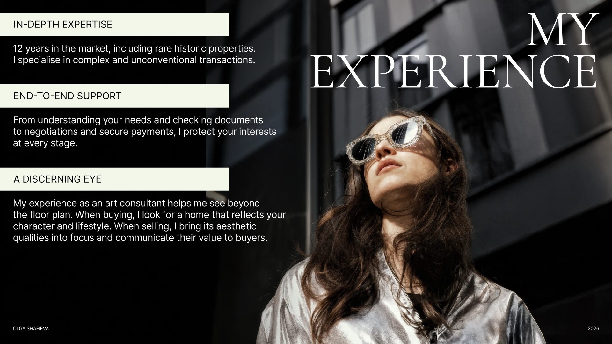
Vom Ausdruck
zur klaren Struktur.
Kauf und Verkauf folgen demselben Raster: Arbeitsschritte links, Interieurfotografie rechts. Die wiederkehrende Komposition erleichtert die Orientierung.
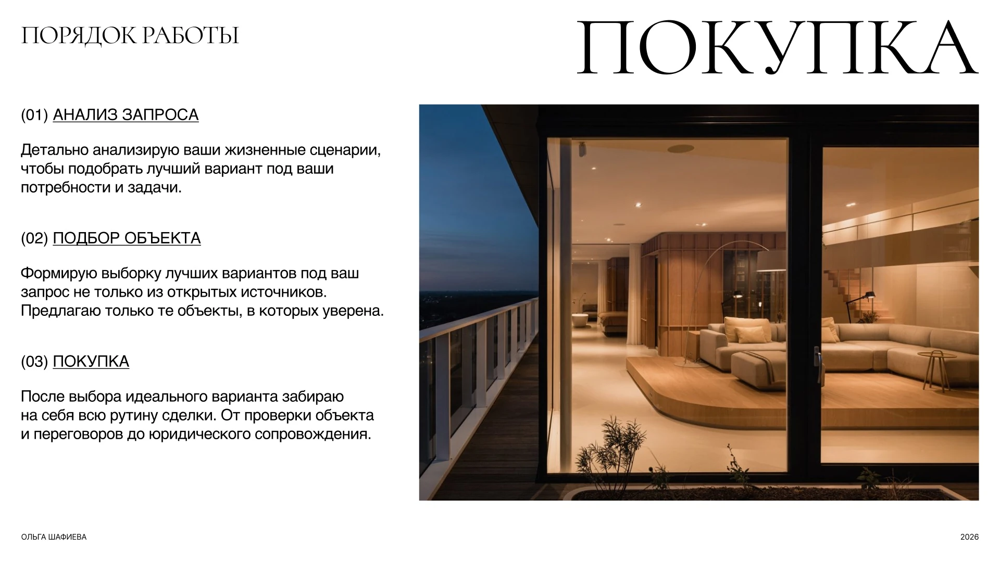
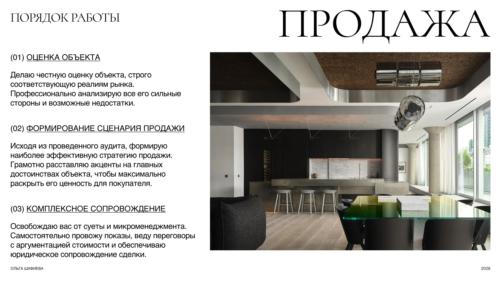
Kunst als Erweiterung
des Raumes.
Im zweiten Kapitel verändert sich die Stimmung. Skulptur, kräftiges Blau und rote Akzente führen in die Kunstberatung ein. Das gemeinsame typografische System verbindet beide Bereiche.
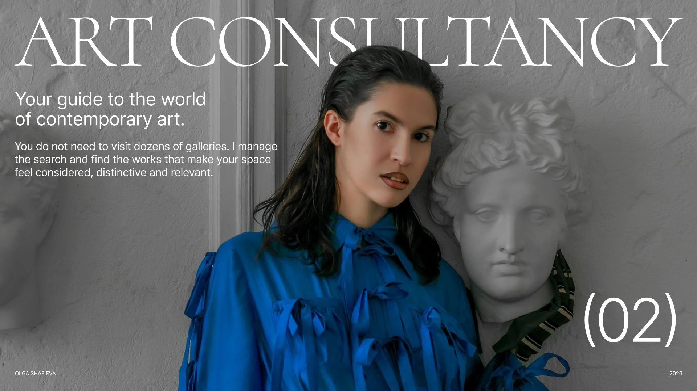
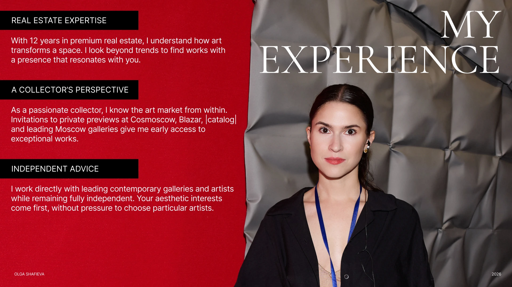
Vielfältige Aufgaben.
Ein stimmiger Auftritt.
Architektur, Interieurs und Kunst verbinden sich zu einer Geschichte. Große Überschriften, kontrastreiche Fotografien und ruhige Textblöcke strukturieren die Präsentation.
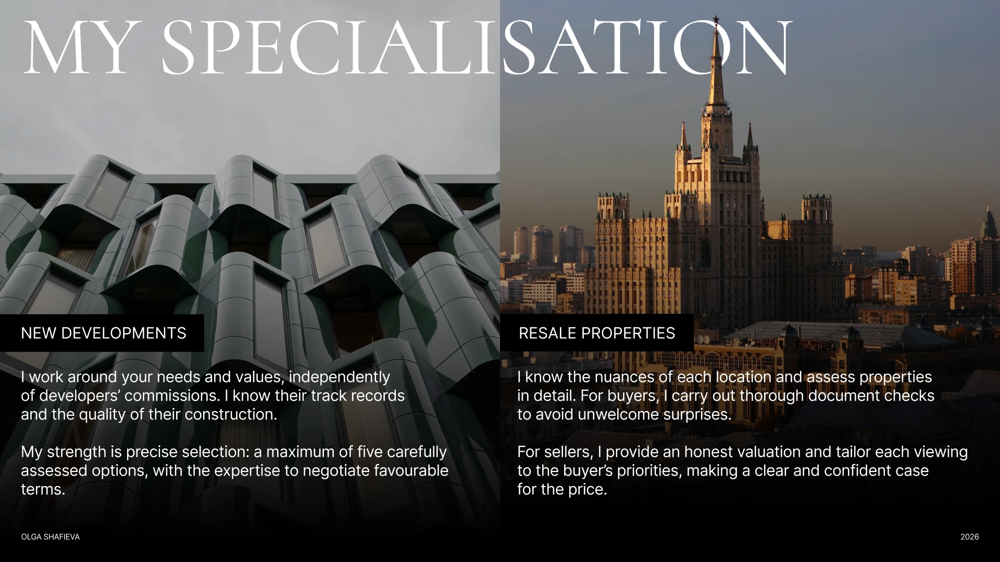
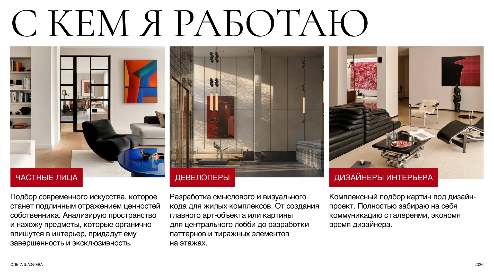
Anna Dmitrieva
Präsentationsdesign
Olga Shafieva
Immobilien & Kunstberatung